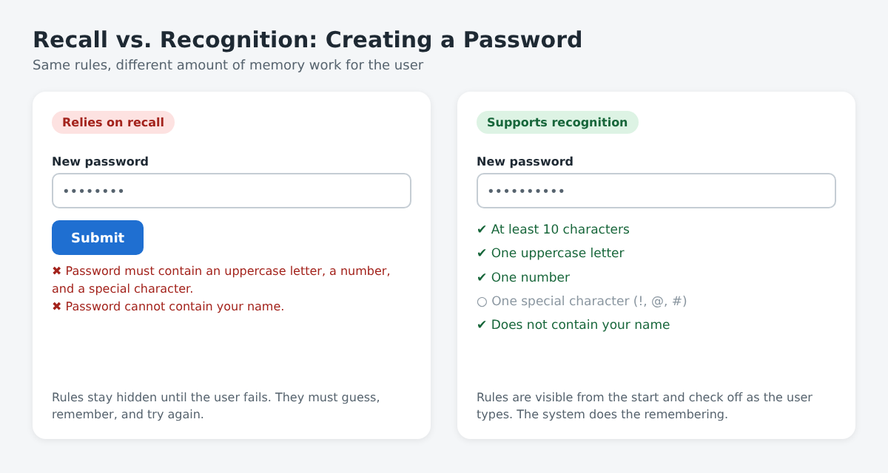
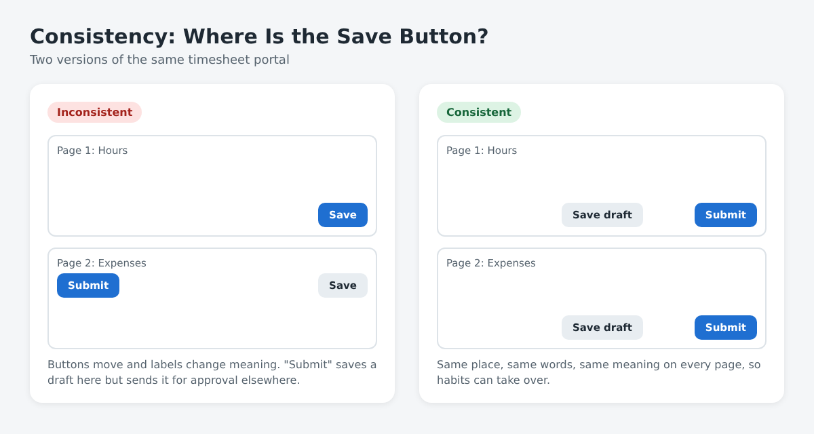
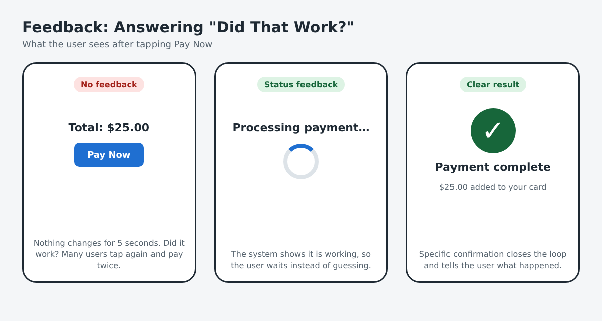

Seeing the Whole Train: What Model-Based Systems Thinking Taught Me About Complexity
Introduction: The Delay That Wasn't Anyone's Fault
Picture a commuter waiting on a light rail platform in the Seattle area. The train is twelve minutes late. Who is to blame? The driver? The signal crew? The person who held the doors at the last stop? The honest answer is usually "all of them and none of them." A delay on a modern transit line is rarely caused by one broken part. It comes from the way many parts, such as trains, tracks, schedules, software, weather, and people, push and pull on each other.
That simple idea sits at the heart of this module. Systems thinking asks us to stop staring at individual pieces and start paying attention to the connections between them. Model-based systems engineering (MBSE) takes that mindset one step further by giving teams a shared, structured model of the whole system instead of a pile of disconnected documents. In this post, I want to explain both ideas in plain language, connect them to my own work and to this course, and also push back a little on where they fall short.
What Is a System, Really?
It is easy to call almost anything a "system," so a clear definition helps. Donella Meadows, one of the best-known writers on the subject, describes a system as a set of elements that are interconnected and organized to achieve some purpose or function (Meadows, 2008). That definition has three parts, and each one matters:
Elements are the visible pieces: the trains, the stations, the riders, the operators.
Interconnections are the relationships and flows between them: schedules, signals, passenger demand, and information passed from one person to another.
Purpose is what the system actually does over time. In this case, that is moving people reliably from place to place.
Meadows (2008) makes a point that surprised me: the elements are usually the least important part of a system. You can replace every train in a fleet and the transit line still behaves like the same transit line. But change the interconnections, such as how often trains are scheduled or how dispatchers communicate, and the behavior of the whole system can change dramatically. In other words, if we want to understand or improve something complex, we should look closely at the arrows on the diagram, not just the boxes.
Meadows also emphasizes feedback loops. A balancing loop pushes a system back toward a goal, like a thermostat turning the heat off once a room is warm. A reinforcing loop amplifies change, like a crowded platform causing longer boarding times, which causes more delays, which causes even more crowded platforms. Once you learn to spot these loops, you start seeing them everywhere.
From Documents to Models
Systems thinking is a way of seeing. MBSE is a way of working. The International Council on Systems Engineering defines MBSE as the formal use of modeling to support a system's requirements, design, analysis, verification, and validation, starting at the earliest concept stage and continuing through the rest of the system's life cycle (International Council on Systems Engineering [INCOSE], 2007). The key word is formal. A sketch on a whiteboard is a model, but it is not what MBSE means. MBSE uses structured, connected models, often built with a language called SysML, that a whole team can query, update, and trust.
To understand why this matters, consider the alternative. Traditional systems engineering has been document-centric. Requirements live in one Word file, the architecture lives in a slide deck, test plans live in a spreadsheet, and design decisions live in someone's inbox. When one thing changes, every document that depends on it has to be found and updated by hand. Inevitably, something gets missed. INCOSE's long-term vision was for model-based approaches to gradually replace this document-heavy style of practice (INCOSE, 2007).
NASA offers a practical example of how this works. Its systems modeling handbook shows how SysML models can be woven into the agency's standard engineering processes, and how diagrams and tables for key work products, such as stakeholder expectations, requirements, and verification, can be generated directly from the underlying system model rather than written separately (National Aeronautics and Space Administration [NASA], 2025). That is the real promise of MBSE: the model becomes the single source of truth, and documents become views of that truth instead of competing versions of it.
The Three Evils: Connecting to the Course Reading
Our course reading, Systems Engineering Demystified, gave me a simple way to think about why complex systems fail. Holt (2023) identifies three root causes, which he calls the "three evils" of systems engineering: complexity, ambiguous communication, and a lack of understanding. What I found most useful is his point that these problems feed into one another. Unmanaged complexity makes communication harder, poor communication leaves people without a shared understanding, and a lack of understanding adds even more complexity. That is a reinforcing loop, exactly the kind of pattern Meadows (2008) teaches us to look for.
Holt (2023) presents MBSE as the most effective way to fight all three evils at once. A model tames complexity by breaking a system into clearly named parts and relationships. It reduces ambiguous communication because everyone works from the same structured model instead of their own reading of a document. And it builds understanding because the same model can be viewed from the perspective of different stakeholders, so an engineer, a manager, and a client can each see the part of the system that matters to them. What stood out to me is that modeling is as much a communication practice as a technical one. When everyone looks at the same model, they argue about the system itself rather than about whose document is out of date.
Systems Thinking in My Everyday Work
These ideas became much more real to me when I applied them to my own job. I work as an account manager at a staffing and consulting firm, where I help place consultants with client organizations and support them once they start. On paper, that sounds like a simple chain: a client has an opening, we find a candidate, the candidate starts work. In practice, it behaves much more like the transit line from my introduction.
The elements are easy to list: clients, hiring managers, recruiters, candidates, contracts, and timesheets. The interconnections are where things get interesting. A hiring manager's feedback on one candidate changes how recruiters screen the next ten. A delay in a background check pushes back a start date, which affects a project schedule on the client's side, which changes how urgently they need the next role filled.
There is a clear balancing loop here: when clients reject candidates, we adjust our screening to move closer to what they actually want. But Meadows (2008) warns that delays in feedback cause systems to overshoot or oscillate. If a client takes three weeks to give interview feedback, recruiters keep sending candidates based on outdated assumptions, and the whole process wobbles. Before this module, I would have described that as "a slow client." Now I see it as a system with a long feedback delay, and the fix is not to work harder, but to shorten the loop.
I also recognize all three of Holt's (2023) evils in my work. Job requirements often live in an email, an updated version lives in a portal, and the hiring manager's real expectations live in a phone call. When those three drift apart, ambiguous communication creates complexity, and nobody has a full understanding of what the role actually needs. We end up solving the wrong problem very efficiently. A shared, structured "model" of each role, even a simple one, would prevent a lot of that drift.
Why This Matters for Designing Digital Environments
It might seem odd to talk about spacecraft and transit lines in a course about designing digital environments, but the connection is direct. A website is a system too. Its HTML provides structure, its CSS controls presentation, and its content gives it purpose. Change one class name in the CSS and pages you never touched can suddenly look different. That is an interconnection at work.
The tools we are using in this course also reflect model-based thinking. Git and GitHub replace the old habit of emailing files named final_v2_REALLY_final.html with a single, versioned source of truth. Every commit records what changed and why. A pull request lets someone review the change in context before it becomes part of the main project. That is very close in spirit to what NASA (2025) describes: one authoritative source, with every view and output traceable back to it.
Semantic HTML follows the same logic. When I use <header>, <main>, <article>, <section>, and <footer> elements instead of a stack of generic <div> elements, I am building a small model of my page's meaning. Browsers, screen readers, and search engines can all "query" that structure, much like engineers query a system model.
A Critical Look: Where Models Fall Short
As useful as these ideas are, it would be a mistake to treat them as magic. I see at least three real limits.
First, a model is never the system itself. Every model is a simplification, and Meadows (2008) makes this point directly: our mental and formal models leave things out, and the parts we leave out can surprise us. A beautifully detailed SysML model can still miss how tired operators behave on a Friday night or how a client's internal politics affect a hiring decision.
Second, MBSE has a real cost. Learning SysML, buying modeling tools, and keeping a model current takes time and money. For a small project, a well-organized set of documents may honestly be the better choice. The value of MBSE grows with complexity; it is not a one-size-fits-all answer.
Third, there is a risk of modeling for its own sake. A team can spend months perfecting diagrams that no decision-maker ever reads. INCOSE (2007) frames MBSE as support for engineering activities like design and verification, so the model should serve those activities, not replace them. The question to keep asking is: "What decision will this model help someone make?"
Recognizing these limits does not weaken the case for systems thinking. If anything, it is an example of it: seeing MBSE itself as one part of a larger system that includes people, budgets, and organizational habits.
Conclusion: Learning to Look at the Arrows
The biggest shift this module gave me is a change in where I look. I used to focus on parts: the late train, the slow client, the broken web page. Systems thinking taught me to look at the connections and feedback loops between those parts (Meadows, 2008). Holt (2023) showed me that complexity, ambiguous communication, and a lack of understanding are the real enemies, and that MBSE is a practical way to fight them by keeping everyone working from the same source of truth (INCOSE, 2007; NASA, 2025). Building this blog with HTML, CSS, and GitHub is a small, hands-on version of the same idea.
The next time a train runs late, a project stalls, or a web page breaks in a way that makes no sense, I hope to ask a better question. Not "Which part failed?" but "How is this system set up to produce this result?" That question is harder, but it is usually the one that leads to a real fix.
Module 1.2 Blog Post
One Step, Many Loops, or a Few Pieces at a Time? Thinking in Life Cycles
Introduction: Nothing Is Ever Really "Finished"
When I think about a light rail system, I usually picture the day a new line opens: ribbon cutting, first riders, photos on the news. But that day is only one moment in a much longer story. Years before it, people were studying ridership, drawing route maps, and arguing about budgets. Decades after it, crews will still be replacing tracks, upgrading signals, and eventually deciding when old trains should be retired. The opening day is not the end of the system. It is closer to the middle.
That is the core idea behind thinking in life cycles. A system is not something we build once and walk away from. It is born, grows, gets used, gets fixed, changes, and eventually ends. In this post, I want to explain what the systems development life cycle is, compare three common ways of moving through it (linear, iterative, and incremental Life Cycle Models), and reflect on why this way of thinking matters so much for digital systems like the websites and applications we are learning to build in this course.
What Is the Systems Development Life Cycle?
In simple terms, the systems development life cycle is the full journey of a system from its first idea to its final retirement. Holt (2023) makes an important distinction that helped me understand this. A life cycle is the set of stages a system passes through, such as concept, development, production, use, support, and retirement. A Life Cycle Model is different: it describes how we move through those stages, including their order and whether we visit them once or many times.
I found it useful to think of this like a road trip. The life cycle is the list of cities you need to visit. The Life Cycle Model is your route. Two teams can have exactly the same stages on their list and still have very different experiences depending on the route they choose. One team drives straight through. Another keeps circling back to earlier stops. A third decides to finish the trip in several smaller journeys.
This distinction matters because people often mix up "what needs to happen" with "how we will do it." Separating the two makes it easier to choose the right approach for each project instead of applying the same habit every time.
The Linear Model: One Pass, In Order
The linear model is the most familiar. Each stage is completed once, in sequence, before the next one begins. You gather all of the requirements, then design the whole system, then build it, then test it, then deliver it. The best-known example is the "waterfall" approach, where work flows downward from one stage to the next like water over a series of steps (Holt, 2023).
Advantages. The linear model is easy to understand, plan, and manage. Each stage has clear outputs, which makes it simple to track progress and set deadlines. It works well when requirements are stable and well understood, such as a project governed by strict regulations or a system very similar to one the team has built before.
Drawbacks. The biggest weakness is that problems are often discovered late. If a requirement was misunderstood at the start, the team may not find out until testing, when fixing it is expensive and slow. Users also do not see anything working until the very end.
What surprised me most is that the paper often credited with introducing the waterfall idea actually warned against using it in its simplest form. Royce (1970) described the sequential approach but pointed out that it was risky, because testing comes so late, and recommended adding feedback between stages and even building an early pilot version first. In other words, the "father" of waterfall was already arguing for some iteration. That made me realize how often an idea gets simplified as it is passed along, losing the warnings that came with it.
The Iterative Model: Going Around Again
The iterative model accepts that we rarely get things right the first time. Instead of passing through the stages once, the team cycles through them repeatedly. Each loop produces a better, more complete version of the system, informed by what was learned in the previous loop (Holt, 2023).
One of the most influential iterative approaches is Boehm's (1988) spiral model. In the spiral, each loop includes setting objectives, identifying and reducing the biggest risks, developing and testing, and then planning the next loop. What I find powerful about the spiral is that risk drives the process. Rather than following a fixed checklist, the team asks, "What is most likely to make this project fail right now?" and tackles that first.
Advantages. Iteration allows early feedback, so misunderstandings surface quickly. It handles changing or unclear requirements much better than a linear approach. It also reduces risk, since each loop is a chance to correct course.
Drawbacks. Iteration can be harder to plan and budget, because it is not always clear how many loops will be needed. Without discipline, a project can keep looping forever, polishing endlessly instead of finishing. It also demands frequent involvement from stakeholders, which is not always realistic.
The Incremental Model: A Few Pieces at a Time
The incremental model breaks the system into smaller pieces, or increments, and delivers them one at a time. Each increment adds new working functionality to what already exists (Holt, 2023). Instead of waiting for the whole system, users get something useful early and more capability over time.
Regional transit is a great real-world example. A large light rail network is not opened all at once. New segments and stations open in stages, often years apart. Riders can use the early sections long before the full network is complete, and each new extension builds on the track and stations already in service.
The incremental idea is also central to modern software practice. The Manifesto for Agile Software Development prioritizes delivering working software frequently and responding to change over rigidly following a plan (Beck et al., 2001). Many agile teams combine iteration and increments: they work in short loops, and each loop delivers a small, usable slice of the product.
Advantages. Users get value early, and the team gets real feedback from actual use. Risk is spread out, since a problem in one increment does not sink the whole project. It is also easier to adjust priorities between increments as needs change.
Drawbacks. The whole system needs a solid overall architecture from the start, or later increments may not fit together cleanly. Integrating new pieces with old ones can get complicated. And it can be tricky to decide what goes into each increment, especially when different stakeholders want different features first.
Comparing the Three Models
Looking at them side by side, I see the three models as answers to one question: when do you want to learn you were wrong?
The linear model assumes you will not be wrong very often, so it learns late and pays for surprises at the end.
The iterative model assumes you will be wrong, so it builds in repeated chances to learn and improve the whole system.
The incremental model assumes you can deliver value in pieces, so it learns from each finished piece as real people use it.
None of them is automatically the best. A team building a medical device under strict regulation may lean linear. A startup testing a new app idea may lean iterative. A city expanding a transit network almost has to be incremental. Choosing a model is itself a design decision, and it should fit the system, the stakeholders, and the level of uncertainty.
Life Cycles in My Own Work and in This Course
Thinking in life cycles changed how I look at my own job. As an account manager at a staffing and consulting firm, I support consultants placed with client organizations. A placement has a clear life cycle: understanding the client's need, sourcing and screening candidates, onboarding, the active assignment, renewal or extension, and eventually the end of the contract. Early in my career, I treated each placement almost linearly, focusing on getting someone started and then moving on. In reality, the most successful placements are iterative. Regular check-ins with both the client and the consultant act like small loops that catch problems before they grow.
This blog is also a good example. It is being built incrementally, one module at a time, with each post adding something new to the same site. And each post is iterative on its own: I draft, review, preview in the browser, and revise. Git and GitHub support both patterns. Every commit is a small step, and every pull request is a checkpoint where work is reviewed before it becomes part of the main project.
Why Life Cycle Thinking Matters for Digital Systems
The most important lesson for me is that design decisions made at the beginning shape everything that comes later. Holt (2023) emphasizes that systems engineering is concerned with the whole life of a system, not just its development. For digital systems, this has three practical consequences.
Design
If we only think about launch day, we design for the demo. If we think about the full life cycle, we design for change. For a website, that means clean, semantic HTML, organized CSS, and consistent naming, so that the person updating it in two years (possibly me) can understand it.
Sustainability
Most of the cost and effort in a digital system's life comes after launch: fixing bugs, applying security updates, keeping content current, and supporting users. Ignoring that stage leads to systems that work beautifully for six months and then slowly fall apart.
Evolution
Digital systems live in a world that keeps changing. Browsers update, user expectations shift, and new devices appear. A system designed with its life cycle in mind can evolve through planned increments instead of needing to be thrown away and rebuilt.
A Critical Reflection: Models Are Maps, Not Rules
I want to end with a caution. It is tempting to treat Life Cycle Models as strict rules that a team must follow perfectly. In practice, most real projects are hybrids. Royce (1970) was already mixing in feedback over fifty years ago, Boehm's (1988) spiral blends sequence with iteration, and agile teams combine iteration with increments (Beck et al., 2001). The labels are useful for thinking and communicating, but the real skill is knowing why you are choosing a model and being willing to adjust when the situation changes.
There is also a human side that the diagrams do not show. A Life Cycle Model only works if the people involved actually follow it. An iterative plan with stakeholders who never give feedback is really just a slow linear plan. An incremental plan without a shared vision becomes a pile of disconnected features. The model is a map, but people still have to drive.
Conclusion
Thinking in life cycles means seeing a system as something that lives, changes, and eventually ends, rather than something that is simply "done." Linear, iterative, and incremental models each offer a different route through that life, with their own strengths and risks (Holt, 2023). For anyone designing digital environments, the takeaway is clear: build for the whole journey, not just for launch day. The best systems are not the ones that look perfect on day one. They are the ones that can keep getting better for years after.
Module 2.1 Blog Post
Designing for the Person on the Platform: What It Really Means to Put Humans First
Introduction: The Two-Second Test
Picture someone running for a light rail train with a coffee in one hand and a phone in the other. The train doors are about to close. They open their transit app to check whether their pass is still active. They have maybe two seconds to find the answer. If the screen is cluttered, the button is tiny, or the important information is buried under a promotional banner, they miss the train. Nothing is technically "broken" in that app. Every feature works. And yet, for that person, in that moment, the design has failed.
That small scene captures what this module is really about. Designing for people is not about adding features or making screens look attractive. It is about understanding how real humans see, think, and behave, often while they are distracted, rushed, or stressed, and then shaping a system around them. In this post, I introduce human-centered design, compare how ISO 9241-210 and IDEO's Field Guide to Human-Centered Design approach it, look at how perception and visual hierarchy affect usability, and use four well-known UX laws to explain why some designs feel effortless while others feel like work.
What Is Human-Centered Design?
At its simplest, human-centered design means starting with people instead of starting with technology. Rather than asking, "What can we build?", a human-centered team asks, "Who are we building for, what are they trying to do, and what gets in their way?" The answers to those questions drive every later decision, from what features exist to where a button sits on the screen.
This idea connects directly to the systems thinking we explored in Module 1. A person is not separate from a digital system. They are part of it. Their eyes, memory, attention, emotions, and habits are just as real as the database or the server. If we design the technical parts perfectly but ignore the human part, the system as a whole still fails.
Two Lenses on the Same Idea: ISO 9241-210 and IDEO
Our course readings offer two very different perspectives on human-centered design. Reading them side by side helped me see that they are not competing ideas. They are two lenses on the same goal.
ISO 9241-210: Human-Centered Design as a Disciplined Process
ISO 9241-210 is an international standard. It provides requirements and recommendations for human-centred design principles and activities throughout the life cycle of interactive systems, from websites and software to devices like vending machines and mobile phones (International Organization for Standardization [ISO], 2019). It sets out a small number of core principles:
The design is based on an explicit understanding of users, tasks, and environments.
Users are involved throughout design and development.
The design is driven and refined by user-centred evaluation.
The process is iterative.
The design addresses the whole user experience.
The design team includes multidisciplinary skills and perspectives.
What stood out to me is how structured this is. The standard frames human-centered design as a repeatable cycle: understand the context of use, specify user requirements, produce design solutions, and evaluate them against those requirements (ISO, 2019). It is written for project managers and usability professionals who need to plan, measure, and prove that a system works for people. In other words, ISO treats empathy as something you can manage, document, and verify.
IDEO's Field Guide: Human-Centered Design as a Creative Mindset
IDEO.org's Field Guide to Human-Centered Design feels completely different in tone. It describes human-centered design as a problem-solving approach built on the belief that the people who face a problem every day are the ones who hold the key to solving it (IDEO.org, 2015). Instead of formal requirements, the guide organizes the work into three phases: Inspiration, Ideation, and Implementation. It also emphasizes seven mindsets: creative confidence, making, learning from failure, empathy, embracing ambiguity, optimism, and iteration (IDEO.org, 2015).
Where ISO speaks the language of process and evidence, IDEO speaks the language of curiosity and courage. Its methods are hands-on: interviewing people in their own environments, building rough prototypes quickly, and treating failure as information rather than embarrassment.
Where They Meet and Where They Differ
Despite their different styles, both sources agree on three things. Both put real users at the center of the work. Both insist on iteration, which echoes the iterative Life Cycle Models from Module 1.2. And both treat understanding people as something you do, not something you assume.
The biggest difference is in what each one protects against. ISO protects against teams that skip steps, ignore evidence, or claim a product is usable without testing it. IDEO protects against teams that follow every step but lose curiosity, playing it safe and never discovering what people actually need. I think a strong design team needs both: IDEO's mindset to find the right problem, and ISO's discipline to make sure the solution really works. Empathy without structure can become guesswork, but structure without empathy becomes a checklist.
Perception and Visual Hierarchy: How People Actually See a Screen
One of the most important lessons in this module is that people do not read screens. They scan them. Our eyes jump to whatever stands out first: large text, bold color, strong contrast, or an image of a face. Our brains also group things automatically. Items placed close together feel related, and items that share a color or shape feel like they belong to the same category. Yablonski (2024) describes these tendencies as Gestalt principles, such as the Law of Proximity and the Law of Similarity, and shows how designers can use them to make relationships on a screen obvious without extra explanation.
Visual hierarchy is how designers use these perceptual habits on purpose. By controlling size, color, contrast, spacing, and position, a designer decides what a person notices first, second, and third. Done well, hierarchy acts like a quiet guide. Done badly, it sends people in the wrong direction.
Here are two examples I see often:
A transit app home screen. The most important information for a rider is usually "Is my pass active, and how much is my balance?" If that information appears in large, high-contrast text at the top, a rider can confirm it in a glance. If it appears in small gray text below a large promotional banner, the banner wins the battle for attention, and the rider has to hunt.
A job application form. In my work at a staffing and consulting firm, I see many candidate portals. The best ones group related fields together (contact details, work history, documents) with clear headings and white space between groups. The worst ones present thirty fields in one long, evenly spaced column. Every field looks equally important, so nothing looks important, and candidates abandon the form halfway through.
In both cases, the content is the same. What changes is how well the design matches human perception.
Four UX Laws That Explain Human Behavior
Perception explains what people see. The four UX laws in this module help explain how people decide and act. Yablonski (2024) collects these principles from psychology and research and translates them into practical guidance for designers on his Laws of UX website and book.
Jakob's Law: People Expect the Familiar
Jakob's Law states that users spend most of their time on other sites, so they expect your site to work the same way as the ones they already know (Yablonski, 2024). This is why the shopping cart icon sits in the top-right corner of almost every online store and why a logo in the top-left usually takes you home.
For me, Jakob's Law is a reminder that originality has a cost. A designer may want to invent a clever new navigation style, but every unfamiliar pattern forces people to learn something new. In a transit app, a rider who is used to a bottom navigation bar on their other apps will look for one there too. Breaking that expectation means slowing them down at the exact moment they are in a hurry.
Fitts's Law: Big, Close Targets Are Easier
Fitts's Law comes from research showing that the time it takes to move to a target depends on how far away it is and how large it is (Fitts, 1954). In design terms, important buttons should be big enough and close enough to reach easily.
This matters enormously on phones. Think again about the rider holding a coffee. They are probably using one thumb. A tiny "Show my pass" button tucked in the top corner is hard to reach. A large button near the bottom of the screen, where the thumb naturally rests, follows Fitts's Law and makes the action nearly effortless. It also helps people with limited dexterity, which shows how good human-centered design often improves accessibility at the same time.
Hick's Law: More Choices, Slower Decisions
Hick's research found that the time needed to make a decision increases with the number of choices available (Hick, 1952). The more options we see, the longer it takes to pick one. Yablonski summarizes this as Hick's Law.
This is why a fare-purchase screen with fifteen different pass types can feel overwhelming, even if every option is useful to someone. A better design might first ask a simple question, such as "Adult, youth, or senior?", and then show only the passes that apply. The total number of options stays the same, but each decision becomes smaller and faster. Hick's Law does not mean we should remove features. It means we should reveal them at the right time.
Miller's Law: Working Memory Has Limits
Miller's Law comes from George Miller's famous paper suggesting that people can hold only about seven, plus or minus two, items in their short-term memory at once (Miller, 1956). Designers use this idea to justify "chunking": breaking information into smaller, meaningful groups, like formatting a phone number as 253-555-0147 instead of 2535550147.
What I found most interesting is that this law is often misused. Some designers treat "seven" as a strict rule, such as "never put more than seven items in a menu." But Yablonski (2024) points out that the real lesson is about organizing information into chunks to reduce mental effort, not about a magic number. A menu people can see does not need to be memorized at all. The real goal is to avoid forcing people to remember information from one screen while they use another, such as making them memorize a confirmation code instead of showing it where they need it.
Bringing It Together: Perception, Attention, and Empathy
When I connect all of these ideas, I see a pattern. Perception determines what people notice. Attention is limited, especially when people are busy or stressed. And empathy is what allows designers to imagine those real conditions instead of designing for a calm, focused user who does not exist.
The four UX laws are not separate tricks. They describe the same human system from different angles:
Jakob's Law
Memory of past experiences.
Fitts's Law
The body and movement.
Hick's Law
Decision-making.
Miller's Law
Mental capacity.
Visual hierarchy ties them together by deciding what reaches a person's attention in the first place.
A Critical Reflection: The Limits of "Laws"
I want to end with a note of caution. Calling these principles "laws" makes them sound absolute, like gravity. In reality, they are patterns based on research, and context matters. Jakob's Law can trap designers into copying bad conventions just because they are common. Hick's Law applies best to simple choices and does not fully explain how people search through complex or unfamiliar lists. And Miller's original research was about memory, not about how many links belong in a navigation bar.
This is exactly where both of our course readings become valuable again. ISO 9241-210 insists that designs be evaluated with real users, and IDEO's Field Guide encourages prototyping and learning from failure (ISO, 2019; IDEO.org, 2015). The laws give us a starting hypothesis, but only testing with real people tells us whether we got it right. The laws are a map. People are the territory.
Conclusion: Designing for the Person Running for the Train
Designing for people means designing for their reality, not our assumptions. ISO 9241-210 gives us a disciplined process for doing that, and IDEO's Field Guide gives us the curiosity and empathy to do it well. Perception and visual hierarchy decide what people notice, and the laws of Jakob, Fitts, Hick, and Miller help explain how they decide and act once they do.
The next time I design a web page, including this blog, I want to picture that rider running for the train, coffee in hand, phone in the other. If they can find what they need in two seconds, the design is human-centered. If they cannot, it does not matter how good it looks. Putting humans first is not a design style. It is a design responsibility.
Module 2.2 Blog Post
Don't Make Me Remember: How Usable Systems Carry the Mental Load
Introduction: The Password I Forgot Five Seconds Ago
We have all been there. A website asks you to create a new password. You type one in, and only after you click Submit does a red message appear: "Password must contain one uppercase letter, one number, and one special character." You fix it. Another message: "Password cannot contain your name." By the third try, you have forgotten which version you finally used, and the next time you log in, you click "Forgot password."
Nothing in that system is technically broken. But it quietly hands a heavy job to the user: remember hidden rules, guess what the system wants, and keep track of your own attempts. That is the opposite of usable.
In this post, I explore what makes a digital system truly usable by looking at the human mind behind every click. I explain how memory and mental models shape interaction, how consistency and feedback make systems easier to use, and how poor design creates unnecessary cognitive load. Along the way, I use Tesler's Law and two principles from Jeff Johnson's Designing with the Mind in Mind to show that good design is really about deciding who does the thinking: the system or the person.
Memory: The Most Overworked Part of Any Interface
Our memory is far more limited than we like to admit. Johnson (2020) captures this in one of his core principles: our attention is limited; our memory is imperfect. Short-term, or working, memory can hold only a few items at a time, and those items fade quickly when we are distracted. Long-term memory is larger, but it is unreliable. We forget details, mix things up, and remember what we expected rather than what actually happened.
This matters because every interface asks people to use their memory in some way. When a checkout page asks for a promo code that appeared on a previous screen, or a form asks for an account number that is printed on a different page, the system is making the user's working memory do the job of a sticky note.
Cognitive load theory helps explain why this is so draining. Sweller (1988) showed that working memory has a limited capacity, and when a task demands too much of it, performance and learning both suffer. Designers often call the unnecessary part of this burden extraneous load: mental effort that comes from the way information is presented, not from the task itself.
Recognition Beats Recall
A second principle from Johnson (2020) gives designers a practical way to reduce that load: recognition is easy; recall is hard. Recognizing something we have seen before is fast and effortless. Recalling it from scratch, with no cues, is slow and error-prone. This is why most people can pick a friend's face out of a crowd but would struggle to describe that face precisely enough for a sketch artist.
Good interfaces lean on recognition:
Menus show options instead of making people type commands from memory.
Search boxes suggest recent searches.
Icons sit next to text labels so people do not have to remember what a symbol means.
Nielsen (2024) lists this as one of his ten usability heuristics, "recognition rather than recall," and recommends making elements, actions, and options visible so users do not have to remember information from one part of the interface to another.
The password example from my introduction fails this test completely. The rules exist, but they are hidden until the user makes a mistake. Showing the requirements next to the field from the start, and checking them off as the user types, turns a recall task into a recognition task.

Figure 1. The same password rules, presented two ways. The version on the right supports recognition instead of recall. Original illustration created for this post.
Mental Models: The Map Users Bring With Them
Memory does not only store facts. It also stores expectations. Every time we use a system, we build a mental model: our own internal picture of how it works. Norman (2013) explains that designers have their own conceptual model of a system, but users only see what the system shows them. If the visible design does not communicate the designer's model clearly, users invent their own explanations, and those explanations are often wrong.
A simple example is a transit card. Many riders imagine that the card itself "holds" their money, like cash in a wallet. In many modern account-based systems, the value actually lives in an online account, and the card is just a key. When a rider reloads money in an app and then taps the card immediately, they may be surprised if the reader does not yet recognize the new balance. Nothing is broken. The system simply works differently from the rider's mental model, and that gap creates confusion, frustration, and calls to customer service.
Norman (2013) describes this kind of mismatch in terms of two "gulfs":
Gulf of execution
The distance between what a person wants to do and figuring out how to do it.
Gulf of evaluation
The distance between what the system did and the person understanding what happened.
Usable design narrows both gulfs, and two of the most powerful tools for doing that are consistency and feedback.
Consistency: Letting Habits Do the Work
Habits are one of the brain's best mental shortcuts. Once we learn that a gear icon means "settings" or that a blue underlined word is a link, we stop thinking about it. Consistency allows people to transfer what they have learned in one place to another without starting over. Nielsen (2024) includes "consistency and standards" as a core heuristic: users should not have to wonder whether different words, situations, or actions mean the same thing.
Inconsistency forces people out of habit and back into problem-solving mode. In my work at a staffing and consulting firm, I have used timesheet and vendor portals where the "Save" button sits on the bottom right on one screen and the top left on the next. On one page, "Submit" saves a draft; on another, it sends the timesheet for final approval. Every time I switch screens, I have to slow down, read carefully, and double-check. That extra effort does not help me do my job. It is pure extraneous load, created by the design.

Figure 2. When buttons stay in the same place with the same meaning, habits can take over. Original illustration created for this post.
Consistency also has a social side. When many systems follow the same conventions, people can walk into a new app and already know how to use most of it. This connects to Jakob's Law from the previous module: people expect your system to work like the ones they already know.
Feedback: Answering "Did That Work?"
If consistency helps people know how to act, feedback helps them know what happened after they acted. Nielsen (2024) calls this "visibility of system status": the system should always keep users informed about what is going on through appropriate feedback within a reasonable time.
Without feedback, people fill the silence with guesses. Think about clicking a "Pay Now" button that does nothing visible for five seconds. Did the payment go through? Should you click again? Many people do click again, and some end up paying twice. A simple loading indicator, followed by a clear confirmation message, removes all of that uncertainty.

Figure 3. Status feedback and a clear result answer the user's most common question: "Did that work?" Original illustration created for this post.
Good feedback is specific and timely. "Error" is feedback, but it is not helpful feedback. "Your card was declined. Please check the expiration date or try another card" tells the user exactly what happened and what to do next. That message narrows Norman's (2013) gulf of evaluation because the person does not have to work out the problem on their own.
Tesler's Law: Complexity Has to Live Somewhere
All of these ideas come together in Tesler's Law, also called the Law of Conservation of Complexity. It states that every system has a certain amount of complexity that cannot be removed, only moved (Yablonski, 2024). Larry Tesler, who proposed it while working at Xerox PARC, argued that it is better for an engineer to spend an extra week reducing complexity than for millions of users to spend an extra minute dealing with it (Yablonski, 2024).
This idea completely changed how I think about usability. Paying for something online will always involve a card number, an address, and a security check. That complexity is real. The only question is who handles it. A poorly designed checkout makes the user type their address twice, remember their card's billing ZIP code, and guess why the payment failed. A well-designed checkout auto-fills the address, detects the card type from the first few digits, and explains errors clearly. The complexity is the same, but the system has absorbed most of it.
The same is true for the password example. The rules still exist in both designs shown in Figure 1, but in the better version, the system carries the job of showing and checking them instead of making users memorize and guess.
A Critical Reflection: Simple Is Not the Same as Easy
It is tempting to read all of this and conclude that the goal is always to make interfaces simpler. But Tesler's Law warns against that conclusion. If designers remove too much, the complexity does not disappear. It shifts back to the user in another form. A form with only one field might look simple, but if that one field expects a specially formatted code with no instructions, the user is doing more work, not less.
There is also a tension between consistency and improvement. Sometimes an old convention is genuinely confusing, and sticking with it simply because people are used to it keeps a bad habit alive. Yablonski (2024) also notes that people do not behave like perfectly rational users, so designers cannot rely on users always taking the "correct" path. I think the real skill is knowing when to follow a convention, when to break it carefully, and how to use feedback to guide people through the change.
Finally, cognitive load is personal. A screen that feels easy to a designer who built it may feel overwhelming to a first-time user, an older adult, or someone using a second language. This is why the human-centered approach from the previous module matters so much: we only find out where the mental load really sits by testing with real people.
Conclusion: Let the System Do the Remembering
Usable systems respect the limits of the human mind. They rely on recognition instead of recall, match the mental models people bring with them, stay consistent so habits can take over, and give clear feedback so users never have to wonder what happened. Johnson's (2020) principles explain why these choices work, Nielsen's (2024) heuristics show how to apply them, and Tesler's Law reminds us that the complexity has to go somewhere (Yablonski, 2024).
The question I now ask about any design is simple: Who is doing the thinking here? If the answer is "the user, for no good reason," the design can be better. The best interfaces quietly carry the mental load so that people can focus on what they actually came to do.